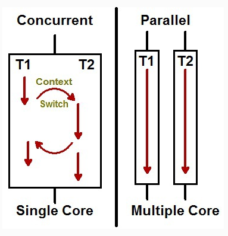

스레드(Thread)란 프로세스 내에서 실제로 작업을 수행하는 주체를 의미한다.
모든 프로세스에는 한 개 이상의 스레드가 존재하여 작업을 수행하며 스레드는 다른 스레드와 독립적으로 동작한다.
또한 각 스레드마다 콜 스택(call stack)이 존재한다.
콜 스택(call stack)이란 컴퓨터 프로그램에서 현재 실행 중인 서브루틴에 관한 정보를 저장하는 스택 자료구조이다.
멀티 스레드(Multi Thread)란 하나의 프로세스 내에서 둘 이상의 스레드가 동시에 작업을 수행하는 것을 의미한다.
멀티 프로세스가 애플리케이션 단위의 멀티 태스킹이라면 멀티 스레드는 애플리케이션 내부에서의 멀티 태스킹이라고 할 수 있다.
멀티 스레드는 대용량 데이터의 처리시간을 줄이기 위해 데이터를 분할하여 병렬로 처리하는 데에 사용할 수도 있고 UI를 가지고 있는 애플리케이션에서 네트워크 통신을 하기 위해 사용할 수도 있다.
그리고 여러 클라이언트의 요청을 처리하는 서버를 개발할 때에도 사용된다.
프로세스를 이용하여 동시에 처리하던 일을 멀티 스레드로 구현할 경우 각 스레드가 자신이 속한 프로세스의 메모리를 공유하므로 메모리 공간과 시스템 자원의 소모가 줄어든다.
스레드 간의 통신이 필요한 경우에도 별도의 자원을 이용하는 것이 아니라 전역 변수의 공간 또는 동적으로 할당된 공간인 Heap 영역을 이용하므로 프로세스 간 통신 방법(IPC)에 비해 스레드 간의 통신 방법이 훨씬 간단하다.
하나의 스레드가 작업을 할 때 다른 스레드가 별도의 작업을 할 수 있어 사용자와의 응답성도 좋아진다.
멀티 프로세스 기반으로 프로그래밍할 때에는 프로세스 간 공유하는 자원이 없어 자원에 동시에 접근하는 일이 없었지만 멀티 스레드를 기반으로 프로그래밍할 때에는 공유하는 자원에 대하여 고민이 필요하다.
서로 다른 스레드가 같은 데이터에 접근하고 힙 영역을 공유하기 때문에 서로 다른 스레드가 서로 사용 중인 변수나 자료구조에 접근하여 엉뚱한 값을 읽어오거나 수정하는 일이 발생할 수 있다.
그렇기 때문에 멀티 스레드 환경에서는 동기화 작업을 통해 작업 처리 순서를 제어하고 공유 자원에 대한 접근을 제어해야 한다.
동시에 돌릴 수 있는 스레드 수는 컴퓨터에 있는 코어 개수로 제한된다.

동시성(Concurrency)은 여러 개의 스레드가 시분할 방식으로 동시에 수행되는 것처럼 착각을 불러일으킨다.
운영체제(또는 가상 머신)는 각 스레드를 시간에 따라 분할하여 여러 스레드가 일정 시간마다 돌아가면서 실행되도록 하는데 이런 방식을 시분할이라고 한다.
Context Switch란 다른 태스크(프로세스, 스레드)가 시작할 수 있도록 이미 실행 중인 태스크(프로세스, 스레드)를 멈추는 것을 의미한다.
병렬성(Parallelism)은 멀티 코어 환경에서 여러개의 스레드가 실제로 동시에 수행되는 방식을 말한다.